Что строит Маятник
Маятник — поле из двоичных клеток. В клетке записан 0 или 1, а ещё не построенное место остаётся пустым. Пустота и ноль — разные состояния: чёрный участок на экране не всегда означает нулевой бит. Цвет клетки зависит от выбранного вида, раскраски и наложенных слоёв.
Основой служит треугольник правила 90. При движении вниз складываются по XOR два верхних соседа: одинаковые значения дают 0, разные — 1. У одного исходного бита получаются строки 1, 11, 101, 1111, 10001… Это запись значений в строке; на холсте между соседними позициями треугольника есть шаг решётки.

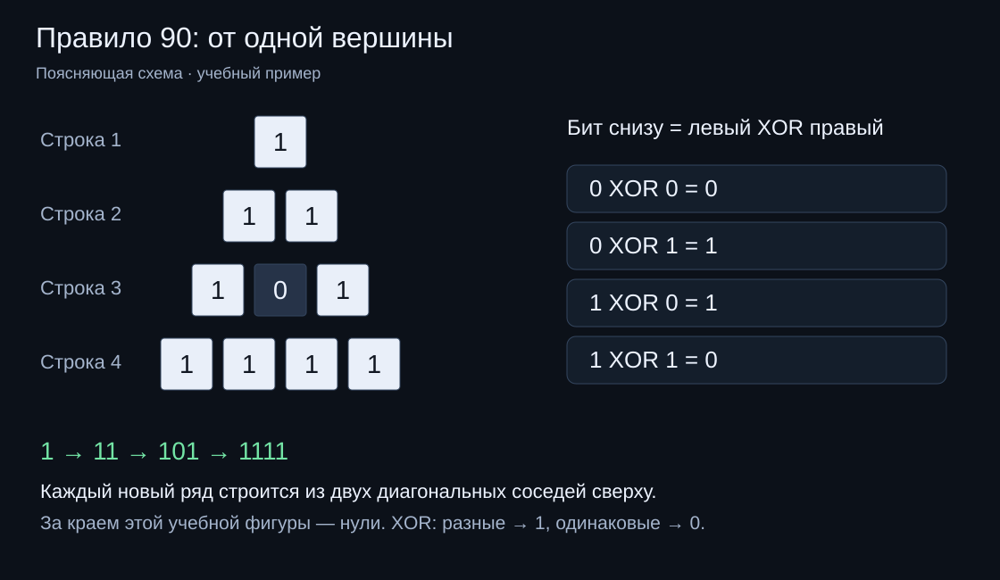
При добавлении следующих вершин программа пересчитывает затронутые клетки. Для обычного конуса в расчёте участвуют и прежнее значение клетки, и верхние соседи. Поэтому картинку после многих вершин нельзя во всех режимах получить простым наклеиванием независимых готовых треугольников.
Вершины чередуются относительно якоря: 0, −1, +1, −2, +2… или в обратном порядке сторон. Из-за этого движения инструмент и называется Маятником. В обычной нумерации кадр показывает ход построения; в режиме пары и некоторых сравнениях смысл шага отличается.
Первый запуск: небольшой воспроизводимый опыт
- Откройте Хорр → Размер и выберите 128. Для начала это удобнее очень большого поля.
- В Построении выберите ЛевПрав. В разделе Поля выберите обычный Маятник.
- Откройте Вид поля и включите Биты. Цвета нуля и единицы можно настроить кружками на этой строке.
- В ромбе x выберите x1, в t — t0,1. Так изменения будут хорошо различимы.
- Нажмите центральное поле плеера. Повторное нажатие ставит паузу. Для точного кадра тяните пунктир.
- Для следующего опыта смените только один параметр: например, включите RGB-соседи или поменяйте направление построения.
Если меню уже было настроено раньше, его расположение может отличаться: группы сохраняют места и закрепления. Нужную команду узнавайте по полному названию в подсказке. На самих кнопках русские слова сокращены.
Очистка → Всё сразу возвращает стандартное состояние. Для сохранения интересного результата сначала создайте кадр в библиотеке или скачайте всю работу, а затем начинайте следующий опыт.
Плеер: кадр, скорость x и время t
Контролы x и t всегда раскрыты на три части: предыдущий шаг, текущее значение, следующий шаг. Ширина каждого — 80 CSS px; наведение её не меняет. Положение плеера не меняется. Нажатие на значение открывает варианты; крайние стрелки меняют параметр на один шаг.

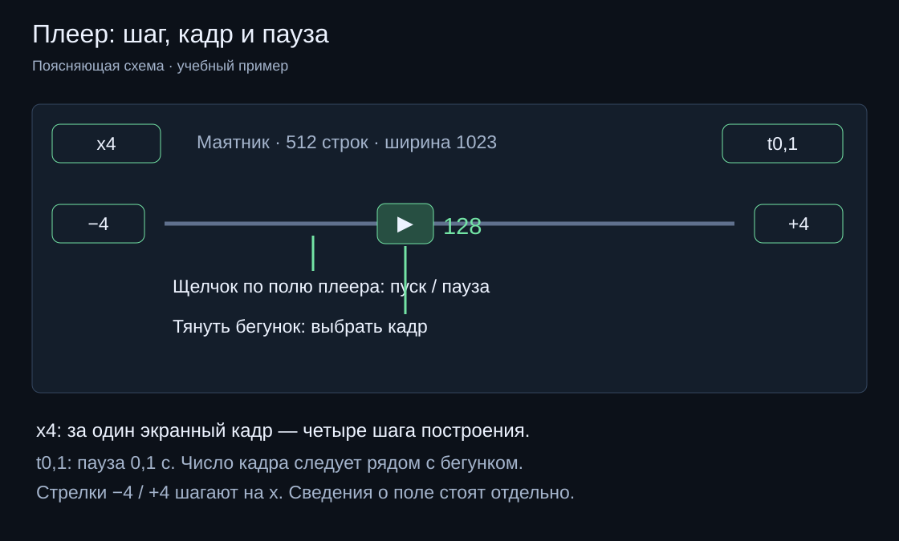
Наведите курсор на поле плеера: появляется ▶, при проигрывании — пауза. Щелчок в центральном поле запускает или останавливает построение. Курсор-рука показывает область нажатия; её контур подсвечивается до внутренних граней стрелок.
Пунктир — отдельная ручка. Его можно захватить внутри кнопки и за продолжение снизу. Захват выбирает кадр и не запускает Play. При наведении пунктир раздваивается. Двойной щелчок по нему возвращает кадр 0 без очистки работы. Номер кадра помещается справа от ручки или слева, когда у края не хватает места.
| Контроль | Что задаёт | Пример |
|---|---|---|
| x1…x64 | Порцию вершин за шаг анимации; обычные стрелки также используют выбранную порцию. | x4 проходит по четыре вершины за обычный экранный шаг. |
| t0…t2 | Время между кадрами в секундах, шаг 0,05 с. | t0,2 — пауза 200 мс; t0 — без заданной паузы. |
| Левая / правая стрелка на паузе | Шаг назад / вперёд на выбранную порцию x. | При x1 удобно сравнивать соседние состояния. |
| Стрелки во время проигрывания | Слева красный сброс к 0, справа пауза; обводки мигают. | Это меняет ход плеера, а не удаляет сохранённую краску. |
Список x — один большой ромб из 64 маленьких ромбов решёткой 8×8. На вариантах стоят только числа 1–64, без x. Для t сохраняется отдельный список длительностей. Щелчок по варианту выбирает его; повторный щелчок по уже раскрытому значению перебирает варианты. В режиме широких краёв фактическая порция может увеличиваться: для 6N и 8N она масштабируется относительно ширины, см. главу о краях.
Под плеером написаны тип построения, число строк и фактическая ширина. Над холстом — номера вершин: левые фиолетовые, правые голубые, ноль светлый. Знаки сохранены только у соседей −1 и +1; остальные номера без знака, сторону показывает цвет. Последняя вершина выделена жирностью, границы столбцов — короткими вертикальными штрихами.
Хорр → Размер и Построение
В «Хорре» есть семь разделов: Размер, Построение, Поля, Ромбо, Наложение, Прогон, Аниматрица. «Размер» задаёт высоту, «Поля» — алгоритм или исходник; «Ромбо» преобразует показ выбранного построения.
Размер
| Пункт | Назначение |
|---|---|
| N/3 | 4N, первой строкой | Укороченное или удлинённое число шагов относительно N. Щелчок сразу перестраивает; повтор по выбранной половине снимает выбор. |
| 128 / 256 / 512 / 1024 / 2024 / 4096 | Сразу построить поле указанной высоты. |
| Задать | Своя высота от 8 до 4096 строк. Число можно набрать, изменить стрелками или ручкой; применить — Enter или «Задать». |
| Свои все / Свои N | Для своей последовательности использовать все исходные строки или только первые N. Это ограничение исходника, а не высота холста. |
Название N/3 обозначает готовый укороченный режим с небольшим запасом: фактически используется ceil(N/3) + ceil(N/64). Для 128 строк — 45 вершин, для 512 — 179. 4N задаёт удлинённое обычное построение; ограничения источников сравнения рассматриваются отдельно.
Построение
ЛевПрав: центр, влево, вправо и далее с увеличением расстояния. ПравЛев начинает с правой стороны. Построить рассчитывает выбранное поле. Прогон сначала получает конечный результат, затем открывает готовые строки сверху вниз; это отличается от настоящего расчёта по одной строке.
Рамка шага отмечает недавно рассчитанные биты. Кнопки Строка +1 и Строка −1 находятся в Масштабе: +1 рассчитывает очередную строку следующего хода, −1 отменяет строку незавершённого хода. Обычный плеер отменяет такой незаконченный промежуточный ход.
Продолжать доступно для источника «Конусы»: разрешает открывать кадры за прежним пределом. Выключение не выбрасывает уже открытый диапазон.
Аниматрица: матрица, строки и цвет
Откройте Хорр → Аниматрица. Это отдельный источник поля: он пересчитывает взятый рисунок, а обычный Маятник добавляет вершины. Плеер, масштаб, контуры, цифры, RGB, заливка, шаблоны и экспорт используют полученное поле. Одновременно выбирается один источник: Аниматрица, обычный/свой Маятник либо сравнение.
Быстрый опыт без добавления вершин
- В Аниматрице выберите 2 ед и Строки.
- Нажмите 1: в исходнике останется одна верхняя единица.
- Установите x1 и удобную паузу t, затем запустите общий плеер.
- Каждый логический кадр пересчитает одну строку ниже. Верхняя строка сохраняется; новых вершин и движения якоря нет. Рамка шага отмечает только что рассчитанные клетки. Нажатие вне этих клеток или Esc скрывает рамку; расчёт остаётся на выбранном кадре.
- Первый проход закончится на нижней строке. При высоте 128 это 127 строковых шагов. Два цикла — 254 шага: второй проход снова начинается со второй строки поверх накопленного рисунка.
x задаёт количество логических шагов за показанный кадр. Поэтому для наблюдения каждой строки используйте x1; x4 пересчитывает четыре строки между обновлениями экрана. t задаёт паузу. Перемотка назад воспроизводит выбранный кадр от неизменяемого исходника.
Матрица и Строки
| Порядок | Один логический кадр | Направление |
|---|---|---|
| Матрица | Один вызов преобразования выбранной матрицы, как в Excel. Новое выделение становится входом следующего шага. | Вниз, вверх, влево или вправо. |
| Строки | Пересчёт одной строки-получателя. Верхняя строка сохраняется; после нижней начинается следующий выбранный цикл. | Сверху вниз. Остальные направления отключены. |
В режиме «Матрица» шкала отводит N шагов на цикл. Поле имеет фиксированные границы. Если выделению больше некуда сдвигаться, последующие кадры могут оставаться одинаковыми. Режим «Строки» действительно выполняет расчёт по очереди; прежний «Прогон» раскрывает уже готовую картинку.
Шесть вариантов и обычный Маятник
| Вариант | Значения | Особенность |
|---|---|---|
| 2 ед | Вниз/вверх: прежняя цель XOR два диагональных родителя. | Горизонтальные сдвиги используют снимок. |
| 3 ед | Вниз/вверх: сумма трёх источников 1 или 2 даёт 1, сумма 0 или 3 даёт 0. Влево/вправо: 1 только при ровно одной единице. | Это отдельный закон, несмотря на XOR в старых именах процедур. |
| ПравЛев | Вертикально — тот же XOR двух родителей и цели. | Вправо — каскад: следующий столбец читает уже изменённый предыдущий. Влево — снимок со сдвигом области. |
| Хорррус | Тот же закон и порядок, что у ПравЛев. | Сохранено отдельное имя найденного Excel-варианта; повторения задаются общим плеером x. |
| 00 | XOR двух родителей по снимку, без прежней цели. | Различает пустую клетку и записанный ноль. |
| Фон | Числа сохраняются. Одна заливка переносит цвет, две заливки гасятся независимо от оттенков. | Для первого опыта нажмите «Пример». У одиночной цифры без заливки переносить нечего. |
| Маятник | Выход из Аниматрицы к обычному построению с вершинами. | Это уже существующее XOR-ядро, а не седьмой новый закон. |
В обычном матричном шаге родителями служат клетки выбранной области, а прежняя цель читается из поля. У «00» и «Фона» используется расширенный снимок. Пересчёт по строкам читает актуальную предыдущую строку и прежние цели текущей строки.
Откуда берётся исходник
- Включить использует прежний взятый исходник, а при его отсутствии берёт текущее поле.
- Всё поле запоминает текущие биты и цвета; исходным выделением становится весь прямоугольник.
- Выделение в режиме «Матрица» берёт прямоугольник, отмеченный инструментом «Ячейки», как активную область. Остальное поле остаётся окружением, а не обрезается.
- 1 создаёт верхнюю единицу с текущей высотой.
- Пример создаёт небольшой цветной рисунок с уже записанными целями. На нём сразу различимы 2 ед, 3 ед и 00.
Режим «Строки» пересчитывает всё поле, поэтому захват отдельного выделения в нём отключён. Захват учитывает правки битов и нанесённую краску. При повторном захвате Аниматрицы отдельно сохраняются цвет цифры, заливка и жирность. Для захвата нужен плоский вид; после включения можно менять представление поля.
Наследование цвета
Исходные показывает цвета вычисленного состояния; Биты — обычные выбранные цвета 0 и 1. Это переключение показа сохраняет текущий кадр. У 2 ед, 3 ед, ПравЛев и Хорррус один цветной источник либо несколько одинаковых сохраняют оттенок; разные цветные источники дают чёрный. Чёрный и автоматический шрифт не считаются отдельными цветными участниками; при чтении снимка белый тоже исключён из смешивания. Жирность складывается через XOR. «00» наследует цвет по собственному правилу двух родителей; «Фон» работает с наличием заливок.
Жёлтая заливка у матричных ПравЛев/Хорррус отмечает новое выделение. Цвет цифры остаётся отдельным состоянием. RGB-соседи по-прежнему вычисляются из значений битов; они не заменяют закон наследования цвета Аниматрицы.
Сброс и сохранение
Сброс исходн. возвращает кадр 0. Смена алгоритма, направления, порядка или числа циклов также начинает отсчёт от взятого исходника. Чтобы продолжить новый опыт именно от показанного результата, сначала снова возьмите поле или выделение.
Исходник, параметры и кадр входят в полную работу и ссылку. Большой исходник хранится в базе браузера; настройки содержат ссылку на него. Для переноса используйте файл работы либо резервную копию. Слишком большая ссылка предложит сохранить работу файлом.
Предел исходника — 2 100 000 клеток. Вне фиксированного поля — пустота, края не замыкаются. Перескок относится к обычному Маятнику: его включение возвращает обычное построение. Конусная карта 1093 и линии будущих вершин не описывают Аниматрицу.
Бесконечные циклы и точный повтор
«Число» выполняет 1–64 цикла. «∞» продолжает расчёт без сброса поля и номера кадра. «Повтор» ищет точное повторение состояния на границах полных циклов и останавливает обычное воспроизведение после вычисления начала и периода. Учитываются биты, наличие клеток, цвета, заливка, начертание и выделение. Результат «С 2 · T 4» означает: с состояния после цикла 2 повторяются каждые 4 цикла, первое совпадение приходится на цикл 6. Цикл 0 — исходник. Определение начала может закончиться позже первого совпадения: это показывается в подсказке статуса. Поле не сбрасывается для поиска. Один цикл «Строк» — H−1 принимающих строк, один цикл «Матрицы» — H сдвигов. Быстрое «Построить» ограничено текущим диапазоном; бесконечное продолжение включается обычным Play. «Вспышка» в Аниматрице показывает клетки с реальным изменением бита, цвета или заливки.
Поля, свои последовательности и сравнения
| Источник | Что происходит |
|---|---|
| Маятник | Обычное построение с чередованием сторон. |
| Своя последовательность | Исходные двоичные строки из библиотеки центрируются на поле. В кадре 0 виден исходник; последующие ходы строятся от него. |
| Конусы · 5.7 | XOR-пересчёт внутри нового конуса. |
| Поле · 5.8 | При добавлении вершины пересчитывается всё существующее поле. |
| Обе стороны · 5.9 | Вершина и её отражение ставятся перед одним общим проходом; это отдельный алгоритм пары. |
| Рандом | Квадрат N×N случайных битов; вне квадрата пусто. |
| Ковёр | Ковёр Серпинского размером 3k, ближайшим снизу к выбранному N. |
Три сравниваемых источника 5.7/5.8/5.9 используют общую рамку N × (2N−1). Нулевой кадр пуст, первый добавляет центральную вершину. В варианте «Обе стороны» некоторые промежуточные кадры пары могут не менять картинку.
Наложение источников
В разделе Наложение выберите XOR или AND, затем сочетание: «Конусы+Обе», «Обе+Поле», «Поле+Конусы» или «Все три». Для двух битов XOR оставляет различия; AND — только общие единицы. Для трёх XOR оставляет единицу при нечётном числе единиц. Пустота остаётся пустой там, где пусты все участвующие источники.
| A | B | XOR | AND |
|---|---|---|---|
| 0 | 0 | 0 | 0 |
| 0 | 1 | 1 | 0 |
| 1 | 0 | 1 | 0 |
| 1 | 1 | 0 | 1 |
Прямо | Зеркл. меняет ориентацию источника «Поле» 5.8, в том числе внутри сочетаний. Это не отражение одновременно всех источников.
Дополнения своего исходника
Своя решётка меняет шаг вершин с одного столбца на два: −2,+2,−4,+4… либо обратный порядок сторон. Инв. сверху заполняет пустой внутренний промежуток инверсией бита над ним: 0→1, 1→0; записанные биты не перетирает. Эти дополнения применяются к обычному/своему построению и не заменяют алгоритмы сравнения.
Опыт: найти различие алгоритмов глазами
- Установите один размер, например 128, и один номер кадра.
- Последовательно включите «Конусы», «Поле» и «Обе стороны», сохраняя кадры в библиотеку.
- Включите XOR двух интересующих источников: единицы покажут места различия.
- Переключите на AND: останутся общие единицы.
Масштаб и положение холста
Колесо над полем увеличивает и уменьшает рисунок; правые + и − дают тот же основной контроль. Перетаскивание поля меняет положение; для работы с инструментом сначала включайте именно нужный инструмент.
| Контроль | Смысл |
|---|---|
| Верх | Вниз | Удерживать верхний или нижний край. Оба вместе ограничивают масштаб так, чтобы поле держалось между ними. |
| Шрна по Оси | Центрировать якорную ось по середине окна. Несмотря на короткое название, это контроль положения оси. |
| Блок | Запретить случайное изменение масштаба колесом, кнопками и жестом. |
| 1:1 | Не уменьшать ниже одного физического пикселя на бит. Это ограничитель снизу. |
| Кратность | 1 — плавное изменение; 2…10 — степени выбранного основания. Стрелки изменяют основание. |
| Строка +1 / −1 | Рассчитать или отменить одну строку незаконченного хода; удобно изучать распространение узора. |
Под плеером части подписи чередуются светлым и более тёмным цветом. Слова сокращены: Маятнкъ, Прескокъ, стркъ, Масштбъ; числа записаны без пробелов. Масштаб относительно одного физического пикселя на бит показывается только точной сокращённой дробью: 1/1, 2/1, 1/4, 137/12. Дробь вычисляется по измеренной ширине холста, числу столбцов и фактической плотности экрана; округления или замены близкой дробью нет. Допустим любой масштаб, размер числителя и знаменателя не ограничен ради краткости. Подпись обновляется при масштабировании и изменении размеров окна. Предел увеличения — 512 экранных CSS-пикселей на клетку.
При выключенной «Ширина по Оси» холст свободно сдвигается по горизонтали при любом масштабе. Запас по краям позволяет довести каждую границу ширины до середины видимой части поля. При открытой библиотеке учитывается оставшаяся видимая часть.
Наложение: сравнение с увеличенной копией
«Наложение» — самостоятельная группа меню со своим заголовком, сворачиванием и закреплением.
Первое «Наложение» запоминает чистое построение текущего кадра с цветами и правками и увеличивает его от вершины вдвое. Следующие нажатия дают ×3, ×4 и далее от того же снимка. Оси и подписи в копию не входят. «Сдвиг» предлагает центральную G, правую R, левую B и совмещение RGB. «Шаг» выбирает цикл 8, 16, 32, 64 или 128; его смена выключает наложение.
«Фиксировать» закрепляет текущую копию на экране. «Оригинал» совмещает размер и центры клеток исходного поля с копией и привязывает последующее масштабирование к общей вершине. «По оси» центрирует копию по X, сохраняя Y и размер. Видимость 100/50/0 позволяет сравнить слои или скрыть копию. «Умен.» создаёт грубую сетку q×q: одинаковый блок остаётся битом, смешанный становится пустым.

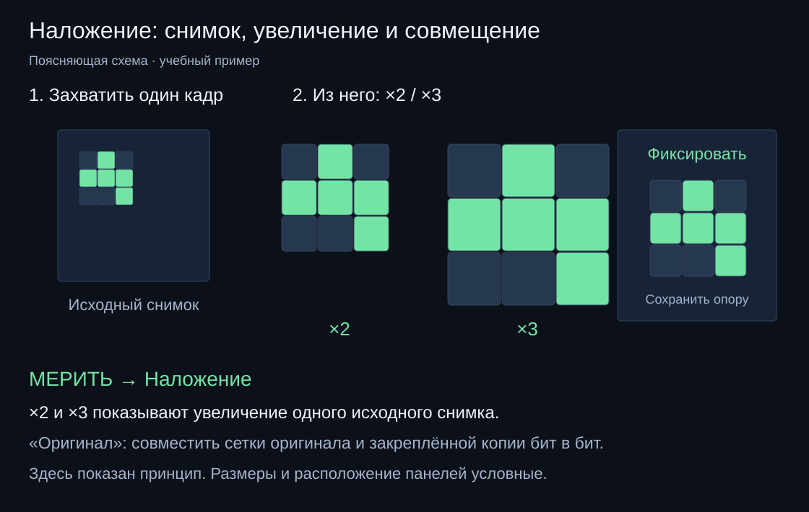
«Сброс наложения» забывает снимок, следующее включение берёт свежий. После F5 источник снимается заново; старая экранная фиксация не восстанавливается. На больших полях исходником становится видимая область. Совмещение ограничено масштабом 40.
Пример: сравнить два состояния с одной опорой
- Выберите исходный кадр и нажмите «Наложение».
- Установите видимость 50% и нажмите «Фиксировать».
- Переключите кадр оригинала, затем используйте «Оригинал» для совмещения сеток.
- Завершив сравнение, нажмите «Сброс наложения».
Вид поля: основа и независимые наложения
Три основных вида выбираются по одному: Перекрытия, Биты, RGB-соседи. «Перекрытия» различают исходные и изменившиеся клетки цветом; «Биты» показывают значения 0 и 1 выбранными образцами; RGB кодирует локальное окружение клетки.
Контуры и Цифры дополняют выбранную основу. Поэтому можно видеть, например, «Биты + Контуры + Цифры» или «RGB + Контуры». Цветные кружки на соответствующих строках открывают их палитры.
Подгруппа «Контуры»
Три строки собраны рядом в общей зубчатой рамке: включение «Контуры», способ обводки, затем «Авто / Свои». Пока «Контуры» выключены, обе нижние строки затемнены и недоступны. Включение возвращает их доступность и прежний выбор.
| Способ | Как читать границу |
|---|---|
| Общ | Единый контур первым собственным цветом. |
| Равн | Граница между одинаковыми битами — антицветом; между разными обводки нет. |
| Двойн | У разных битов две полосы, по одной со стороны каждого бита. |
| 1/0 | Вертикальная граница между разными соседями — цветом 1, межстрочная — цветом 0; у одинаковых 1–1 используется 0, у 0–0 — 1. |
| Авто | Свои | Автоматическое правило цветов или собственная пара образцов. Сам способ обводки остаётся выбранным. |
В самом низу группы «Виды поля» стоит одна кнопка с двумя независимыми частями: Вспышка / Тепло. Вспышка ненадолго выделяет новую вершину цветом её исходной ветви. Тепло накапливает историю изменений клетки: нагрев проходит через жёлтый, оранжевый, красный, пурпурный и белый, остывание — через синий. При ходе назад или большом скачке история нагрева начинается заново; это не новый цвет самого бита. Обе части могут работать одновременно.
Отдельная группа «Вид»
Здесь находятся дополнительные правила показа: чётность клеток/строк/столбцов, заполнение пустот, полосы, обводка, геометрический центр, грани, подписи и настройки цифр. Шрифт и размер цифр меняют подписи внутри клеток, а не значения поля.
180° соединяет повёрнутые части; Целиком добавляет полную перевёрнутую копию; Вверх ногами поворачивает весь показанный холст вместе с линиями и подписями. Меню остаётся на месте. Для поворота только прямоугольного фрагмента используйте «Ячейки».
RGB-соседи — подробно
RGB показывает не только значение клетки, но и два её горизонтальных соседних бита. Один цвет отвечает на вопрос: «каковы левый сосед, сама клетка и правый сосед в этом месте?»
1. Как три бита включают три канала
- R, красный включается, если сама клетка = 1.
- G, зелёный включается, если сосед слева = 1.
- B, синий включается, если сосед справа = 1.
Выключенный канал равен 0, включённый — полному цвету. Каналы складываются: красный + зелёный = жёлтый, красный + синий = пурпурный, зелёный + синий = голубой, все три = белый. Нет включённых каналов — чёрный.

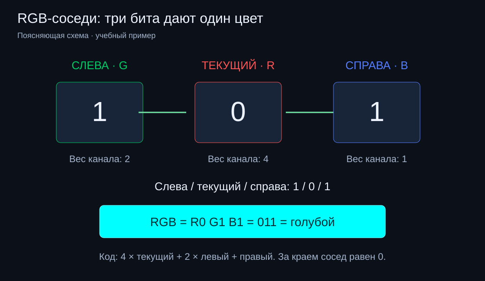
101 в примере даёт код цвета 011, а не 101.За границей поля сосед считается нулём; незаписанный или скрытый сосед не даёт единицу в канал. Сама пустая клетка не становится отдельным девятым RGB-классом. Чёрный RGB-класс 000 — записанная клетка с нулевой тройкой, и его можно выбирать как другие цвета.
2. Все восемь цветов

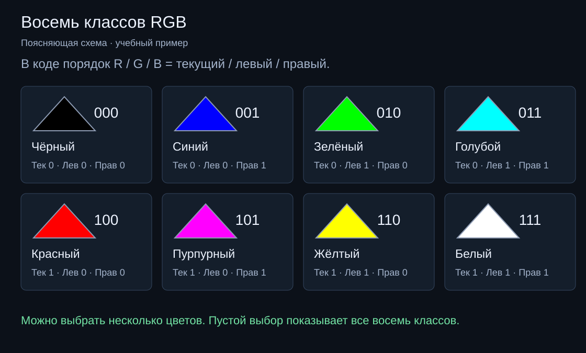
| Цвет | Слева | Клетка | Справа | Код R–G–B |
|---|---|---|---|---|
| Чёрный | 0 | 0 | 0 | 000 |
| Красный | 0 | 1 | 0 | 100 |
| Зелёный | 1 | 0 | 0 | 010 |
| Синий | 0 | 0 | 1 | 001 |
| Жёлтый | 1 | 1 | 0 | 110 |
| Пурпурный | 0 | 1 | 1 | 101 |
| Голубой | 1 | 0 | 1 | 011 |
| Белый | 1 | 1 | 1 | 111 |
Попробуйте: соберите цвет из трёх битов
Нажимайте соседей. Здесь меняется только учебная схема.
3. Выбор нескольких классов
Перед нажатием цвета или режима ЧБ/Цвт/БЧ проверяется результат для текущего поля. Если оно станет целиком чёрным или белым, кнопка затемняется и недоступна. Проверка учитывает и пустые клетки; при изменении кадра доступность пересчитывается. Заблокированное действие не меняет выбранные цвета и сохранённые настройки.
- Включите Вид поля → RGB-соседи.
- Нажмите один цветной треугольник. Останутся клетки этого класса.
- Нажмите второй, третий и другие — они добавляются к выбору.
- Повторное нажатие снимает только этот цвет. Галочка и светлая обводка отмечают выбранный треугольник.
- Снимите все галочки, чтобы снова увидеть все восемь классов.
Пустой набор означает «фильтр не задан», а не «ничего не показывать». Счётчики убраны с кнопок: число клеток и код класса доступны в подсказке. Если выбранный класс отсутствует на текущем кадре, соответствующая часть рисунка будет пустой — это допустимый результат.
Пример. Выберите голубой и пурпурный. Останутся центры пространственных троек 101 и 011. В одной из них текущий бит — 0, в другой — 1. Цветовой фильтр выбирает локальные формы окружения, а не только все единицы или все нули.
4. Цвт, ЧБ и БЧ
| Режим | Выбранные классы | Остальные места |
|---|---|---|
| Цвт | Сохраняют свои RGB-цвета. | Скрываются, если задан набор цветов. При пустом наборе видны все классы. |
| ЧБ | Становятся белыми. | Становятся чёрными. |
| БЧ | Становятся чёрными. | Становятся белыми. |

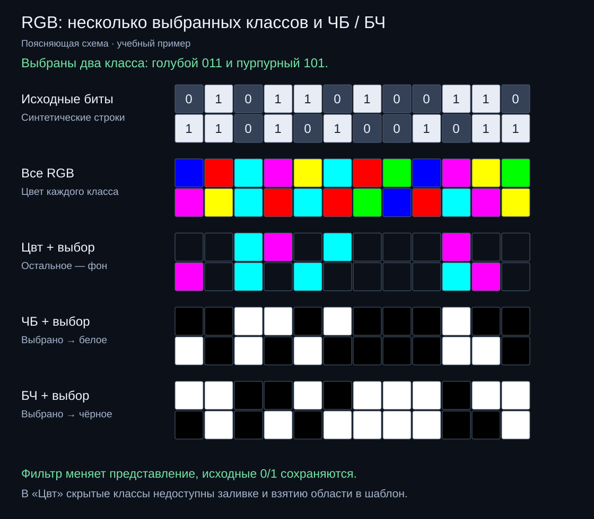
В чёрно-белом преобразовании белый означает попадание в выбранную группу либо её дополнение, смотря какой режим включён. Это не обещание, что исходный бит равен 1. В БЧ белым становится и фон вне выбранных классов. Если не выбрано ни одного цвета, все записанные RGB-клетки считаются выбранными.
Опыт: выделить один тип окружения как маску
- Остановите кадр и включите RGB.
- Оставьте только голубой класс: пространственная тройка 1–0–1.
- Нажмите ЧБ: выбранные центры станут белыми, остальное — чёрным.
- Включите БЧ: получите обратное изображение той же маски.
- Вернитесь в Цвт и добавьте пурпурный — сравните объединение двух классов.
5. Заливка и шаблоны работают по тому, что показано
В RGB инструменты учитывают показанный цвет и выбранный фильтр. В «Цвт» область берётся по видимому RGB-цвету; скрытая фильтром клетка не служит доступной клеткой для захвата. В ЧБ/БЧ область определяется чёрно-белым результатом. Например, два разных RGB-класса, ставшие соседними белыми клетками, могут соединиться в одну область по выбранному правилу связности.
Поэтому переключение Цвт → ЧБ может изменить не только вид, но и форму области, которую удастся залить или взять в шаблон. Для сравнения именно исходных 0/1 переключите основу на Биты. Сами треугольники фильтра не переписывают двоичное поле.
При смене кадра меняется окружение клеток и, следовательно, их RGB-классы. Один и тот же выбранный цвет обозначает одно правило тройки во всех кадрах, но его места на рисунке могут перемещаться и исчезать.
Почему восемь цветов, а наборов выбора больше?
Три бинарных канала дают 2³ = 8 цветов. У восьми переключателей 2⁸ = 256 состояний выбора. Это число наборов, а не число RGB-цветов. Пустой набор трактуется как «все», поэтому некоторые настройки дают одинаковый рисунок.
Чётность и заполнение пустот
В «Виде» есть независимые пары Клетки, Строки, Столбцы → Чёт / Нечёт. Можно показывать обе части, одну либо ни одной. Чётность клетки означает положение в шахматной решётке, а не значение её бита.
Строки и столбцы нумеруются с 1. Если оставить нечётные строки, видны 1,3,5,7… Малый ромб в составной кнопке попеременно оставляет только чётные и только нечётные. Он не меняет исходные 0/1.

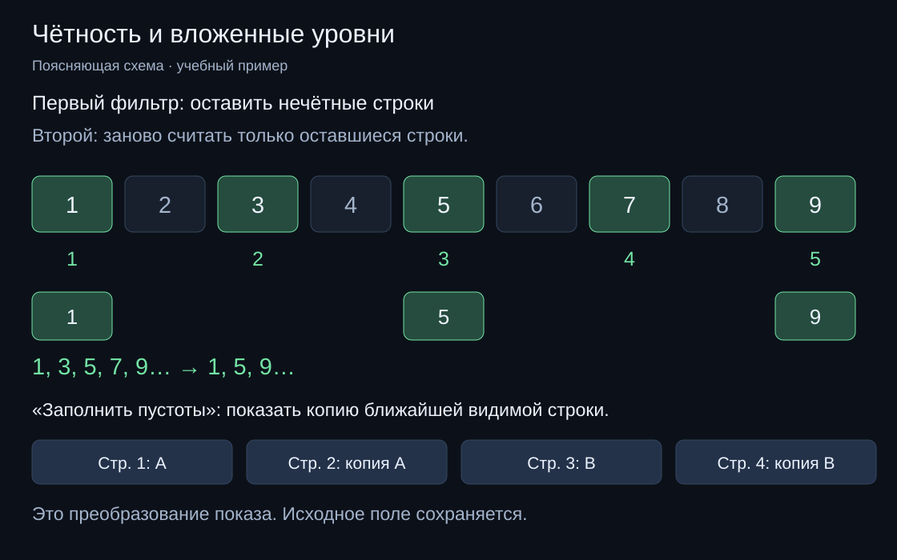
Стр вложенно / Кл вложенно позволяют добавить уровни и настроить каждый отдельно. Удаление уровня возвращает предыдущую стадию фильтрации.
Заполнить пустоты — включить / выключить копирование ближайшей видимой строки в скрытые промежутки. Предпочитается строка сверху, у края используется доступная крайняя. Заполнение участвует в показе, цифрах и экспорте, но исходные биты сохраняются.
Край и ширина xN−1 — подробно
N — число строк поля. Коэффициент в «Крае» задаёт, сколько таких высот занимает ширина: W = m × N − 1, где m = 2, 4, 6 или 8.
1. Что означает минус один
Для поля в N строк один обычный треугольник занимает до 2N−1 столбцов: слева от центрального столбца N−1, сам центр 1 и справа ещё N−1. Поэтому (N−1)+1+(N−1)=2N−1. Режимы 4N, 6N, 8N в группе «Край» дают более широкую рамку, а высота остаётся N.
При N=512 обычная ширина 1023. В варианте 4N−1 — 2047 столбцов, 6N−1 — 3071, 8N−1 — 4095. «−1» относится ко всей ширине после умножения.

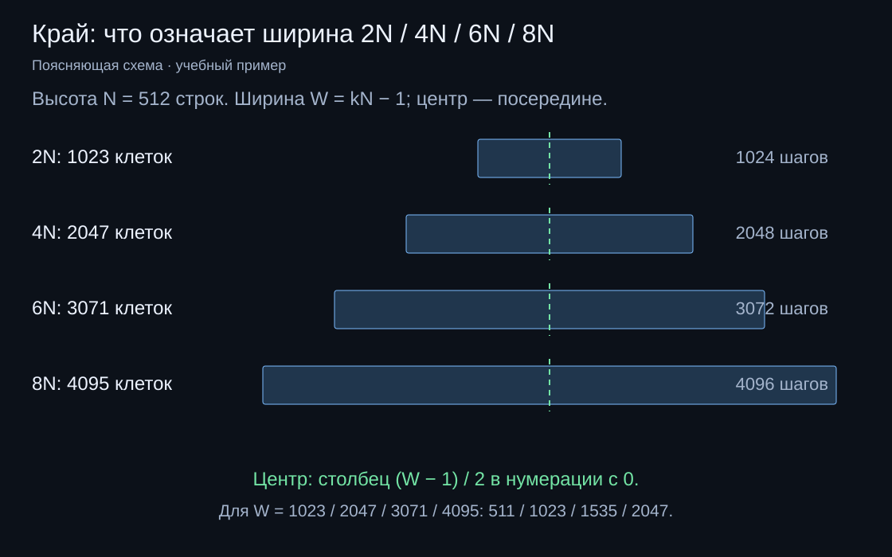
| Коэффициент | Формула ширины | N=128 | N=512 |
|---|---|---|---|
| 2N | 2N−1 | 255 | 1023 |
| 4N | 4N−1 | 511 | 2047 |
| 6N | 6N−1 | 767 | 3071 |
| 8N | 8N−1 | 1023 | 4095 |
Посчитать свою ширину
Учебный расчёт формулы. В рабочем Маятнике для очень больших размеров коэффициент может уменьшаться из-за ограничения числа клеток.
2. Не путайте три разных «четвёрки»
| Где | Что значит |
|---|---|
| Плеер x4 | Порция продвижения анимации. |
| Хорр → Размер → 4N | Удлинённое число вершин/ходов обычного построения. |
| Край → Ширина → 4N | Рамка шириной 4N−1 при высоте N. |
На экране под плеером показывается фактическая ширина. Эта подпись полезнее предположения по одному названию кнопки: сравнения и свой исходник имеют собственную геометрию.
3. Перескок, сброс хода и отскок
Зависимости кнопок: «Перескок» включает режим края; без него «Отскок», «Сбрасывать», ширина и «Концы» недоступны. «− / +» работают при включённых «Концах» и в пределах масштаба полосы. Выключение родительского режима сохраняет значения зависимых настроек. Универсальный Ромб находится в Хорр → Ромбо и не требует «Перескока».
Перескок через границу и возврат счётчика в центр — разные действия. В группе Край рядом с «Перескоком» и «Отскоком» есть кнопка Сбрасывать. По умолчанию она выключена: номера ходов и маятниковые смещения продолжаются без сброса. Включённая кнопка повторяет цикл, снова начиная в центре поверх накопленного рисунка. Явно сохранённый выбор режима сохраняется при обновлении страницы.
Порядок вершин: «ЛевПрав» даёт смещения 0, −1, +1, −2, +2… от центра, «ПравЛев» меняет стороны местами. Это чередование сторон, а не однонаправленный обход строки. Физический перенос через ширину поля действует при обоих состояниях «Сбрасывать».
Пример без пары: N=8, W=2N−1=15, центр — столбец 8
Столбцы здесь нумеруются с единицы. Начало: 8, 7, 9, 6, 10…. Ход 14 со смещением −7 попадает в столбец 1; ход 15 со смещением +7 — в столбец 15; ход 16 со смещением −8 выходит слева и переносится тоже в столбец 15.
| После хода 16 | «Сбрасывать» включено | «Сбрасывать» выключено |
|---|---|---|
| Следующий ход | Новый цикл, смещение 0 → столбец 8 | Ход 17, +8 → столбец 1 |
| Ещё один | Смещение −1 → столбец 7 | Ход 18, −9 → столбец 14 |
| Затем | Смещение +1 → столбец 9 | Ход 19, +9 → столбец 2 |
Сбрасывать включено: …1, 15, 15 | 8, 7, 9…, где черта — начало нового цикла. Сбрасывать выключено: …1, 15, 15, 1, 14, 2, 13, 3…. В обоих случаях два соседних попадания в столбец 15 — это правый край при +7 и перескочившая слева вершина при −8.
«Сбрасывать» включено: ширина W=mN−1, ходов в цикле min(mN, 16384); в показанном примере это mN=W+1=16. После них счётчик хода возвращается в 0, увеличивается число циклов; следующий конус снова центральный. Биты поля не очищаются, чистый исходник не загружается: новый цикл взаимодействует с накопленным рисунком.
«Сбрасывать» выключено: общий номер хода не обнуляется, диапазон плеера расширяется по мере продолжения. Перенесённые через края вершины затем идут от противоположных краёв к центру, сохраняя чередование сторон. При W=15 смещения −15 и +15 естественно попадают в столбец 8 по модулю ширины. Счётчик циклов здесь отмечает повторы маршрута положений: 2W одиночных ходов либо W парных. Такое попадание в центр не является сбросом хода: следующий номер продолжает расти, поле сохраняется. Ограничение — 1 048 576 кадров; на нём воспроизведение ставится на паузу с сообщением, без автоматического возврата в начало.
Переключение «Сбрасывать» перестраивает поле в кадр 0 и начинает новый опыт. Это отличается от самого продолжения внутри выбранного режима: там поле не очищается.
Формула переноса: при нумерации с нуля c=((A+d)%W+W)%W, где A — центр, d — очередное смещение. Для A=7, W=15, d=−8 получается c=14, то есть столбец 15. При d=−15 и d=+15 получается c=7, то есть центр 8.
Особенность сохранённого парного режима: якорь ставится один раз при создании поля; далее ход добавляет пару −(k+1), +(k+1). При включённом «Сбрасывать» новый цикл снова начинает с пары −1/+1, без повторной вставки центрального якоря. При выключенном номера пар и смещения продолжаются без обнуления. Пример и схема относятся к режиму без пары.
Отскок (пинг-понг): вершина отражается от обоих краёв. При ширине W=15 маршрут по столбцам идёт 1, 2, …, 15, 14, …, 1; крайняя клетка не дублируется на развороте. Период полного прохода туда и обратно — 2(W−1)=28. Выключенное «Сбрасывать» продолжает этот маршрут с глобальным номером хода; при включении кнопки после конца диапазона начинается новый цикл поверх накопленного поля. При перемотке восстанавливаются и биты, и розовые отметки текущего круга.

Плеер может проходить несколько циклов; подпись сообщает число перескоков/отскоков и циклов. Слово «Сброс» появляется в подписи только при включённом «Сбрасывать»; выключенный режим не добавляет отдельную подпись «Без сброса». При широких краях фактическая порция анимации увеличивается относительно x: множитель равен max(1, m/4), с округлением. Например, при x4 для m=2/4 порция 4, для m=6 — 6, для m=8 — 8.
4. Остальные кнопки группы
- Розовые клетки
- Розовым автоматически отмечаются клетки, последними записанные перескочившей вершиной; отдельной кнопки этой подсветки в «Крае» нет. В ромбических геометриях эта отметка не рисуется.
- Концы
- Отдельная нижняя полоса стыка правого и левого краёв. −/+ и колесо над ней меняют её масштаб от 0,5 до 2.
Опыт: увидеть действие края
- Выберите обычный Маятник, N=128, затем включите «Край → Перескок».
- Начните с ширины 2N и x1, t0,1. Откройте «Концы».
- Доведите вершину до края и проследите появление на другой стороне. Розовая отметка помогает найти последние записи.
- Включите «Отскок» и сравните путь и узор.
- Выберите 4N, затем 8N. Смена ширины перестраивает поле и возвращает подгонку всего края в окно.
Геометрия края применяется к обычному Маятнику. Источники сравнения и собственный исходник используют другие правила. Поле ограничено примерно 100 миллионами клеток: при большом N программа снижает слишком широкий коэффициент. Фактический результат смотрите в подписи под плеером.
Перескок, отскок и ширина только подготавливают поле, а воспроизведение запускает Play. При t0 Play выполняет x шагов на обновление экрана; быстрая команда «Построить» считает пачки и работает иначе. Пауза и повторный Play сохраняют обычный режим. Цвет вспышки закреплён за исходной ветвью: правая синяя после переноса появляется слева и продолжает вправо, левая жёлтая — наоборот. Жёлтые границы ширины поля — сплошные линии толщиной один экранный пиксель независимо от увеличения.
Хорр → Ромбо: ось, сборка и поворот
Ромб преобразует показ текущего построения: обычного Маятника, своего исходника и других видов поля. Он не зависит от «Перескока» в Крае. Исходные биты остаются в своей системе координат.
Ось задаёт строку горизонтального сгиба — от 1 до высоты текущего построения, по умолчанию последнюю строку. Стрелки сдвигают ось на одну строку; число можно ввести и применить Enter. Исходник ниже выбранной строки отсекается, верхняя часть сохраняется и отражается вниз через ось. Поэтому движение оси меняет и срез, и высоту получившейся фигуры.
Сборка независимо заполняет левый и правый нижние слоты. Для каждого доступны L, R, L↔, R↔: левая или правая исходная часть, без горизонтального отражения либо с ним. Всего 4×4 = 16 сочетаний, включая L | L и R | R. Верх C сохраняется; список подписан «левый слот | правый слот».
Поворот поворачивает собранную фигуру целиком: 0°, 45°, 90°, 135°, 180°, 225°, 270°, 315°. Обычный щелчок добавляет 45°, правый вычитает 45°. Кнопка «Схемы 16» открывает ту же таблицу, что приведена ниже; прежнюю кнопку «Краями» заменяют варианты сборки.
При включённом «Ромбе» внизу окна видна схема текущей сборки, в том числе при закрытом меню. Цветные части C, L/R, стрелки и угловые метки обозначают исходные части и их отражения; схема поворачивается вместе со сборкой. При изменении настроек, сбросе или открытии работы она обновляется автоматически. Под схемой можно переключить сборку назад или вперёд; после последней снова идёт первая, перед первой — последняя. Ось и поворот сохраняются. Это условная схема устройства сборки, а не уменьшенный снимок битового поля.

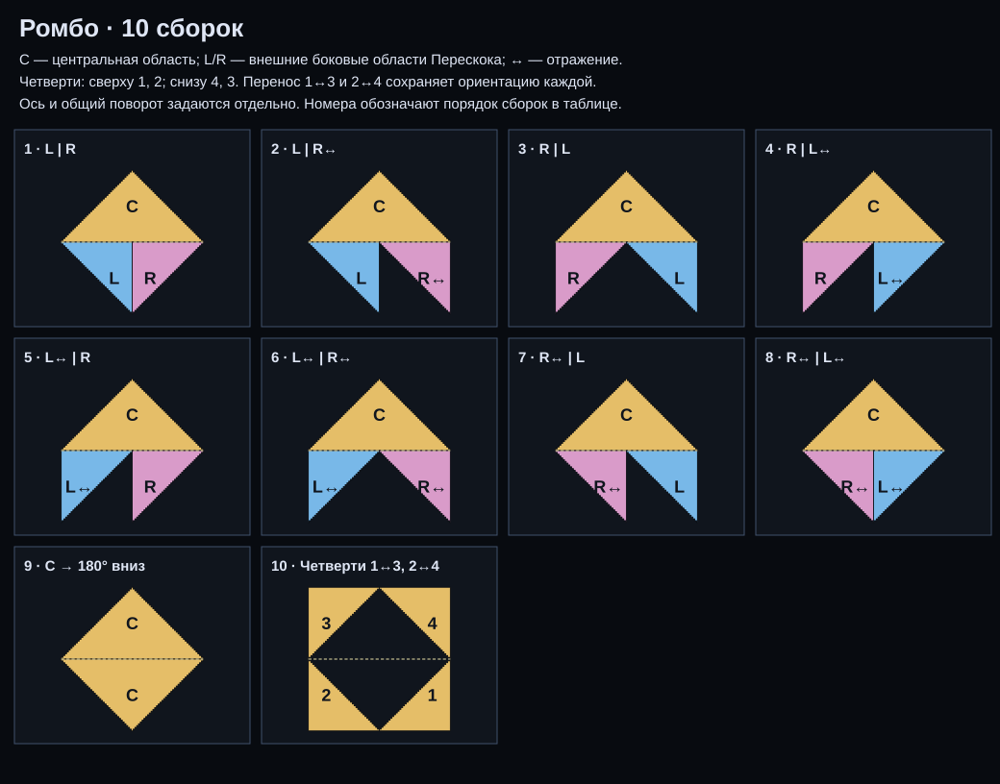
Секторы креста
На узком экране прокручивайте схемы по горизонтали, чтобы прочитать подписи.
В «Осях» включите «Секторы креста». Буквы обозначают области, цифра 1 — левую сторону, 2 — правую. Заглавная А и строчная а относятся к разным областям.
- А1 · А2
- Над горизонталью, между вертикалью и диагоналями.
- Б1 · Б2
- Над горизонталью, снаружи верхних диагоналей.
- а1 · а2
- Под горизонталью, между вертикалью и диагоналями.
- б1 · б2
- Под горизонталью, снаружи центральных диагоналей.
- С1 · С2
- Внешние нижние области за наклонными линиями, идущими от краёв поля.
Сами линии — границы, они не принадлежат сектору. Если вертикаль закреплена или смещена, её положение может отличаться от центра диагоналей. Подписи следуют реальной геометрии.
Зеркала по крестам
В «Виде» включите «Зеркала крестов» и выберите направление отражения. Ниже показан один крест. Цвета на схеме обозначают источник каждой области; фактура взята из настоящего поля.
Отражения всех крестов читают один исходный снимок. Поле и слой краски остаются прежними, меняется показанный результат. При выборе сектора программа ищет точную клетку-источник: пустое место или координата между клетками не округляются. Такие пиксели остаются прежними. Внешние С1/С2 могут заполнить лишь часть остальных областей.
Зеркала крестов работают в плоском виде при масштабе внутренней решётки 1:1. Если выбран несовместимый вид, Маятник объясняет причину в подсказке.
Карта треугольников и оси по времени
В «Осях» есть специальный источник Карта 1093. Это точная карта перевёрнутых треугольников для стандартного пустого Маятника на 512 строк, а не универсальная разметка любого рисунка.

- Оси карты
- Вертикальные промежутки между соседними перевёрнутыми треугольниками: от острия одного до основания следующего; последний отрезок идёт вниз.
- Маска узора
- Ограничивает новую заливку узором между треугольниками; нанесённая ранее краска сохраняется.
- Зеркала ▼
- Отражают верхний рисунок внутрь треугольников по их верхним основаниям. Отражения читают один исходный снимок.
- Автооси ▼
- Вычисляют треугольники текущего поля; это отдельный источник, который не следует смешивать с готовой картой 1093.
Источник «По времени»
Меняйте кадр с включёнными «Осями карты»: разметка берётся из таблицы именно этого кадра для двух решёток A и B. В измеренных кадрах 1–179 есть отслеживаемые треугольники, в 180–500 их нет. После 500 измерений нет: это отсутствие данных, а не продолжение траекторий.
Для несовместимого размера или режима ориентируйтесь на пояснение Маятника. Переход к чужому построению не делает старую карту новой точной разметкой.
Раскраска
Краска помогает проследить отдельные области узора. Откройте «Раскраска», включите «Заливка», выберите цвет кружком рядом с кнопкой и щёлкните по области поля. Пустая клетка и нарисованный ноль имеют разный смысл. Выбранный способ соединения клеток определяет, куда сможет распространиться цвет. Перетаскивание поля сдвигает изображение; двойной щелчок снимает заливку.
Как соединяются клетки
«Область» предлагает «По сторонам», «Стороны + углы», «Только углы», «Шахматки 0» и «Один бит». В первом случае касания углом недостаточно. «Стороны + углы» допускают диагональные переходы; «Только углы» оставляет диагональные связи. «Шахматки 0» — специальный режим работы с нулями шахматной решётки. «Один бит» красит единственную клетку и игнорирует зеркальную пару.
Весь цвет включает карандаш, который заменяет выбранным цветом все пиксели точно такого же RGB по всему текущему полю, включая раздельные участки. Включите режим, задайте цвет заливки и щёлкните по образцу на поле. Связность областей здесь не ограничивает замену; это изменение краски, а не значений битов. Одна «Отмена» возвращает предыдущую раскраску.
Раскраска на следующих кадрах
Тройка Выкл · Цвет · Биты в «Раскраске» задаёт перенос любой ручной раскраски, в том числе «Весь цвет». Сначала нанесите краску и выберите вариант; затем запустите плеер или смените кадр вручную. «Цвет» заново заменяет исходный RGB по всему новому кадру. «Биты» сохраняет краску на прежних клетках, даже если 0 сменился на 1. «Выкл» снимает перенос, сохраняя ручную краску текущего кадра. Параметры и образец переносятся ссылкой и файлом работы. Обычные клетки переживают масштаб и смену вида; следы сложных растровых отражений воспроизводятся только в своей точной проекции.
| Пример | Клетки слева направо | Что сохраняется |
|---|---|---|
| До включения | 1 0 1 | Карандашом окрашена первая единица. |
| Следующий кадр, «Цвет» | 0 1 1 | Цвет исходных единиц: окрашены новые совпадения. |
| Следующий кадр, «Биты» | 0 1 1 | Место первой клетки: теперь окрашен её ноль. |
«Зеркально» добавляет соответствующую область относительно центра поля. Shift временно добавляет зеркальную пару при заливке. «Таких же» переносит цвета ручной раскраски на совпадающее расположение нулей и единиц по полю. «Симметр» проверяет зеркальные места в тех же строках. Повторное нажатие этих режимов снимает только созданную ими автокраску. «Одиночные 1» и «Одиночные 0» красят клетки без соседа того же бита через сторону; касание углом не считается.
Столб, центр, оси и автоматическая раскраска
«Столб» сначала нужно включить, затем щёлкнуть по биту. Запоминаются его значение, столбец и начальная клетка. На следующих кадрах совпадающие биты от этого места вниз автоматически окрашиваются в том же столбце. Другой щелчок заменяет выбор. Кружок справа задаёт собственный цвет инструмента; режим «На кадр» меняет его на каждом кадре.
«Центр краской» обрабатывает области, касающиеся центрального столбца: выключено, по единицам, по нулям. Отдельные «Центр 1» и «Центр 0» позволяют включить оба типа и задать каждому цвет. «Ось 2» расширяет окраску симметричными парами, пока слева и справа стоят равные биты. «От осей» наносит собственный цвет от всех показанных автоматических осей и линий точки встречи с выбранными правилами области. Скрытые оси и линии, заменённые тотемами, не участвуют.
«Авто» проходит столбцы от вершины в обе стороны и красит ещё не окрашенные области. Повтор останавливает процесс. «Авто: палитра» перебирает собственную палитру, начиная с выбранного цвета; выключение оставляет один цвет. «Рост» продолжает уже нанесённую краску при переходе вперёд на новые кадры. При выключенном «Рост: свой цвет» он наследует исходные цвета; при включённом наносит новую краску своим цветом. Прежняя окраска от этого не меняется.
Цвета Заливки, Столба, От осей, Авто, Роста, Точки и ТочкиОси настраиваются отдельно. При наведении или фокусе на кружке появляется маленькая кнопка автосмены: откройте её и выберите «Выкл», «На построение» или «На кадр». «Сброс цветов» возвращает настройки цвета выбранной группы и выключает её автосмену, сохраняя нанесённую краску. Различия команд очистки разобраны ниже.
Пример: один столбец на нескольких кадрах
- Остановите кадр и включите «Столб».
- Выберите его цвет и щёлкните по единице в нужном столбце.
- Перейдите на следующий кадр: инструмент продолжит красить выбранный тип бита от выбранного места вниз.
- Для смены цвета на каждом кадре выберите у кружка «На кадр».
Точка Ось
Эта группа наносит краску относительно точки встречи. «Точка» переключается между выключенным состоянием, единицами и нулями. Она начинает заливку от битов на осях точки встречи и использует выбранные правила области раскраски.
«ТочкаОсь» имеет те же три состояния, но распространяет цвет по другому правилу: вниз и по диагоналям вниз, а по горизонтали — к оси. Настройка связности обычной Заливки на этот режим не действует. Выбирайте его, когда нужно показать направленные связи рисунка, а не связную область.
У «Точки» и «ТочкиОси» свои кружки цвета и автосмена. «Рост» общий с Раскраской: продолжает нанесённую краску на новых кадрах. «Трети» разбивает показ кадра на три шага: сначала верх, затем боковые части слева и справа, затем низ. Повторное нажатие выключает этот способ показа.
Кнопка «Точка» в группе «Оси» управляет точкой встречи и следованием оси за кадром. «Точка» в «Точка Ось» управляет краской. Различайте группу, подсказку и цветовой кружок.
Захватите сам центр встречи и тяните вверх-вниз для смены кадров — скрытый переключатель «Сдвиг кадром» для этого не требуется. На большом поле выбранный кадр применяется при отпускании; отмена жеста возвращает прежний кадр. Захват свободной оси вдали от центра сохраняет её ручное перемещение.
Выбор и изменение шаблонов
Шаблон — отдельная фигура, которую можно выбрать, копировать, перемещать и сохранить. «Взять цвет» собирает пиксели выбранного цвета текущего изображения. Выбор связной области использует настройку «Область». «Автошаблоны: счёт» подсчитывает области кадра по соседству через сторону и показывает размеры, цвет и соседства.
Режим «Один» заменяет выделение, «Вместе» добавляет фигуры к набору. Правый щелчок выбирает шаблон; повтор по активной фигуре позволяет снять её выбор. «Найти все» выделяет совпадающие копии выбранного шаблона. Щелчок по его карточке в библиотеке также выбирает все вхождения. Поддерживаемое выделение обновляется при переходах по кадрам; Esc прекращает его и снимает выбор.

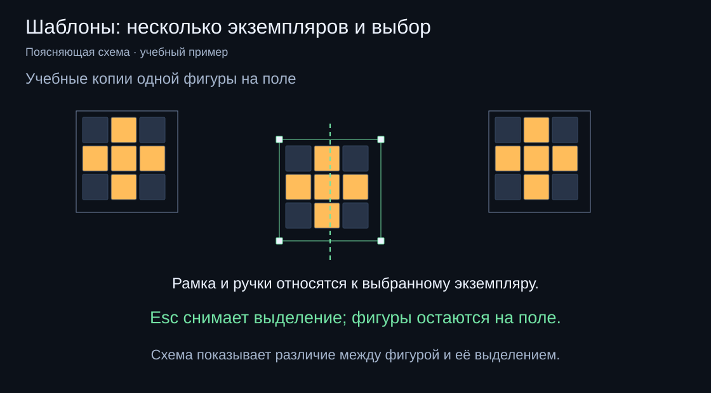
Перемещение и преобразования
Включите «Двигать» и тяните ось выбранных одинаковых шаблонов. Горизонтальная ручка перемещает влево-вправо, вертикальная — вверх-вниз. Два пальца сдвигают и масштабируют поле. «Ещё копия» добавляет независимый экземпляр. Отражения ↔ и ↕ переворачивают фигуру; варианты зеркал позволяют создать копию за край или за выбранную линию.
Высота задаётся от 1 до 3200 процентов, кнопки «Выше/Ниже» меняют её на 10 процентов исходного размера. «Пропорции» изменяет ширину вместе с высотой относительно центра фигуры. «Вниз, строк» допускает значения от −4096 до 4096; видимость — от 0 до 100 процентов. «Туда/назад» возвращает исходное положение и размер, а следующий щелчок возвращает изменённое состояние, в том числе для фигуры за краем поля.
«Без следа» снимает исходную заливку при переносе, сохраняя биты узора. «Инверт-след» оставляет противоположный цвет бита: 1 становится чёрным, 0 — белым. «Прокрасть» окрашивает все выбранные видимые шаблоны, единицы и нули вместе; повтор снимает именно эту окраску. «Маска» закрывает фигурой ещё меняющиеся клетки, оставляя анимированный рисунок в её просветах.
«Спуск» проводит шаблоны вниз по строке за шаг, пока под ними застывшие биты. Перед ещё меняющимися клетками либо у низа поля движение прекращается. Это один проход; повтор кнопки останавливает его. Собственные оси шаблона «Верт/Гориз» при первом нажатии создаются обе в центре, затем показываются независимо. Для поворота со старой фигурой доступны XOR и AND.
Ручки поворота позволяют развернуть шаблон на 180° вокруг центральных, граничных или показанных ручных осей. «XOR ↓1» переносит единицы под шаблоном на строку ниже со сдвигом на столбец в обе стороны через XOR. «Xor-Next» использует фигуру как единицы и смещение k вниз и в стороны; после нажатия k увеличивается на один. Каждый такой шаг берётся от исходной фигуры, k ограничен высотой поля.
Delete временно скрывает выбранные фигуры только в текущем кадре и виде. Backspace и «Убрать с поля» убирают выбранные полевые шаблоны; библиотечные записи остаются. «Сброс шабл.» восстанавливает исходные фигуры, положение, размер, биты и оси, убирая копии, следы и временное скрытие. Обычная краска и библиотека сохраняются.
Лимит площади шаблона исходно равен 4096 бит. В библиотеке его можно изменить до 1 048 576 либо выбрать «Без лимита». Если область не выбирается из-за размера, сначала проверьте этот предел. Слишком большая изменённая фигура тоже может не пройти ограничение.
Оси и ручные линии
Симметрия исходных битов
Остановите кадр и включите «Симметрия». Обычные оси сравнивают все соседние клетки; шахматные рассматривают две чередующиеся решётки отдельно. Для каждого способа независимо включаются вертикальные ↕, горизонтальные ↔ и диагональные ╲╱ направления. «Биты осей» подсвечивает участвующие клетки при масштабе от трёх пикселей на клетку; при меньшем масштабе остаются линии.
Порог «Строк от» задаёт непрерывную длину вдоль оси, «Бит от» — совпадение с каждой её стороны. Клетка самой оси в ширину не входит. Пропуски нарушают непрерывность. Нижний предел — 2; верхние значения достигают 16384. Пустое поле или ноль в «до» означает отсутствие верхнего предела. «Тотемы» показывает цветные треугольники вдоль найденных осей; вложенные области сохраняются, перекрытия смешивают цвет.
«Оси пустот» создаёт свои оси по основанию и двум диагоналям чёрных треугольников не меньше выбранной высоты. «Автооси ▼» показывает вертикальные промежутки между полными нулевыми треугольниками высотой от четырёх строк. «Карта 1093» и «По времени» предназначены для 512 строк, маятника по очереди и пустого фона. Её «Оси карты», «Маска узора» и «Зеркала ▼» показывают карту, ограничивают новую раскраску и отражают верхний узор внутрь треугольников соответственно.
Ручные оси
«Линии» управляет общим показом семейств, «Верт», «Гориз» и «Диаг» — каждым отдельно. Скрытие сохраняет положение и настройки зеркала. «+» на линии добавляет ось. «N-ось» после щелчка по биту создаёт центральную ось и по N осей с каждой стороны до концов выбранной строки. N задаётся от 1 до 64; прежние наборы остаются.
«Своя ось» ставит горизонталь по верхней границе выбранного бита и сразу включает зеркало вниз. Потяните конец, чтобы изменить наклон; тело — чтобы передвинуть линию параллельно. Shift рамкой и Shift/Ctrl по линиям позволяют собрать несколько осей. Delete или Backspace удаляет выделенные собственные оси. «Линейка» измеряет расстояние между двумя щелчками; третий начинает новую мерку, четыре угла рамки меняют существующую.
«Точка» ведёт точку встречи и ось за кадром. Переключатель хода оси: 0 — стоит, 1 — следует маятнику, −1 — антиход. «Кадр отдельно» фиксирует остановленный снимок в другом окне, где оси и треугольники рассчитываются в фоне.
МЕРИТЬ: площади и линии
«Площади» показывает размеры в клетках: треугольную область ▼ нижнего сектора, верхний, нижний, левый и правый секторы, зубец пилы. Совпадающие площади получают общий цвет и равенство в подписи. «Секторы» и «Пила полная» помогают видеть границы. «Размеры» подписывает целые линии и участки между пересечениями; диагональная длина считается шагами по клетке.
«Заморозка» добавляет границы ▼ текущего кадра к уже сохранённым. Одинаковые положения и размеры не дублируются. При изменении кадра и росте поля контуры остаются на своих местах. Для получения треугольников нужна точка встречи. Правая часть «Сбр» удаляет только накопленные границы. Обе части кнопки всегда на месте; без накопленных границ «Сбр» неактивна.
Геоцентр отмечает общий геометрический центр всей показанной фигуры жёлтым крестом с подписью «Центр». Нули и единицы имеют одинаковую площадь; пустые и отфильтрованные клетки не участвуют. Перекрывающиеся части учитываются в общей фигуре один раз. Если частей несколько — например, две решётки, отражение или части Ромбо, — дополнительно видны голубые пронумерованные подцентры. Подпись сообщает координаты общего центра от левого верхнего угла вида и соответствие номеров частям; поворот и отражение перемещают отметки вместе с фигурой.
В подписях строк жёлтая сумма выровнена по последней цифре, знак равенства стоит в общей колонке. Номер строки сохраняет прежнее положение. Количество единиц и нулей не меняется от выравнивания.
Зеркала: источник и результат
В единой группе сначала выберите «Что», затем доступные ось, сторону, операцию и результат. Сам выбор источника ничего не отражает. Настройки зависят от источника; завершите выбор кнопкой «Отразить» либо включением соответствующего отражения. Копия переносит изображение, XOR оставляет различающиеся биты, AND — совместные единицы.
| Что отражается | Как действует | Результат |
|---|---|---|
| Шаблон | ↔, ↕ или за линию; на месте либо независимая копия за край. XOR/AND отсутствуют. | Изменённый или новый шаблон. |
| Биты / краска | По последней своей оси. При наличии краски используется её силуэт, иначе биты над осью. Копия, XOR, AND. | Правка клеток. |
| Поле за осью | Через подвижную ось; цветовой фильтр действует, XOR/AND нет. | Отдельный холст. |
| Растр: треугольник | У точки встречи снизу вверх или обратно; доступны полная ширина, вывернутое отражение, собственные шахматные режимы. | Только вид. |
| Растр: клинья | Левая и правая диагонали; «Наружу» меняет направление. Копия, XOR, AND. | Только вид. |
| Растр: линии | Последовательно по выбранным линиям вниз/вправо либо вверх/влево. Диагональ требует целого сдвига. | Только вид. |
| Краска / весь растр | Внутри найденных треугольников; можно ограничиться краской. Копия, XOR, AND. | Только вид. |
| Верхний узор | Рекурсивно вставляет рисунок в нижние треугольники. Операция фиксирована: XOR. | Только вид. |
| Заливка | Добавляет парную клетку того же бита относительно центральной оси; Shift временно включает пару. | Правка краски. |
Для растровых источников можно ограничить отражаемый цвет. У «Растр: треугольник» собственное предварительное XOR/AND и общая операция зеркал могут действовать вместе. У «Верхнего узора» общая операция не заменяет встроенный XOR.
Пример: получить зеркальную копию фигуры
- Выберите полевой шаблон.
- В «Зеркала» установите «Что: Шаблон» и ось «Слева ↔ справа».
- Выберите результат «Копия за край» и сторону вправо.
- Нажмите «Отразить». Полученная копия управляется отдельно.
Свёртки и сравнительный Сгиб
«Свёртка ↔» последовательно переносит правую часть влево, затем левую вправо, по столбцу к центру через XOR. «Свёртка ↕» переносит низ вверх, затем верх вниз, по строке к центральной строке. Одинаковые единицы при XOR гасят друг друга. Участвуют только застывшие биты; ещё меняющиеся пропускаются, их число показывается в сообщении. Выключение возвращает исходное поле.
«Загиб» возвращает отражение, вышедшее за боковую границу, внутрь поля. «Загиб Верт» использует вертикали в местах встречи диагоналей зеркала со сторонами. Эти варианты нужны при работе с отражением, выходящим за ширину поля.
«Сгиб» открывает отдельное сравнение исходных битов. Двигайте ось полушагами, переходите к краю или центру, запускайте движение со скоростью 1–20 шагов в секунду. «Стоп при различии битов» останавливает проход на несовпадении, «Различие» приводит к первой найденной разнице, «Ч/Б» показывает исходные биты без цветной раскраски результата.
«По 2 битам» строит ось через центры двух выбранных клеток с произвольным наклоном. Точки и ось можно перемещать, сторону сгиба — менять. Статистика отдельно показывает совпадения, различия 0/1, переходы бит→пустота и пустота→бит, а также клетки на оси.
Ячейки
Включите «Ячейки» и протяните прямоугольник; «Строки» выделяет целые строки протяжкой вверх или вниз. «Скрыть строки» и «Скрыть столбцы» сближает оставшиеся части в экранном представлении. Исходные биты при этом остаются. Щелчок по линии разрыва раскрывает скрытый участок, «Раскрыть всё» возвращает все строки и столбцы, «Снять выбор» убирает прямоугольник.

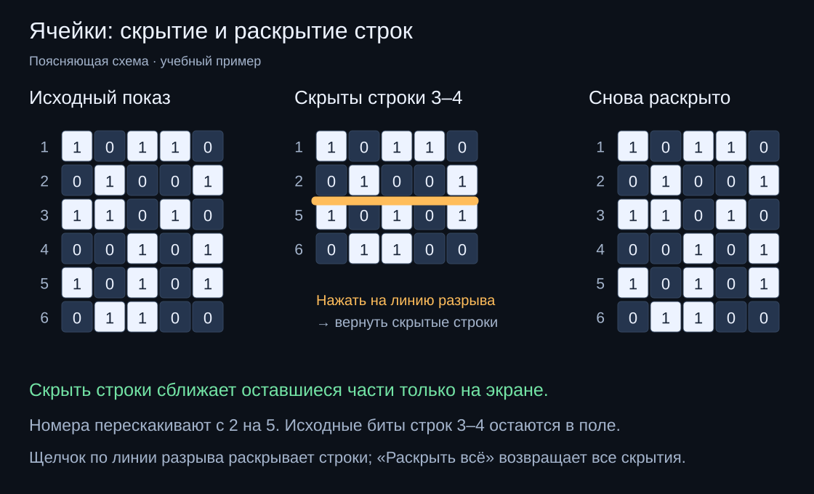
Для прямоугольного фрагмента доступны «Выделение 180°» и «Верх ↔ низ». Они преобразуют выделенный рисунок, сохраняя окружающую область. На сенсорном экране два пальца продолжают управлять масштабом и сдвигом.
Пример: сравнить части через промежуток
- Включите «Строки» и выделите несколько мешающих строк.
- Нажмите «Скрыть строки» и сравните сближенные фрагменты.
- Щёлкните линию разрыва либо «Раскрыть всё», чтобы вернуться к полной картинке.
Библиотека
Библиотека объединяет шесть разделов. Можно выбрать плитки или список, фильтровать текущий раздел, создавать папки и перетаскивать элементы для группировки. Названия переименовываются; удаление папки сохраняет её содержимое уровнем выше. Панель меняет ширину за левую границу и открывается в отдельном окне.
| Раздел | Что сохраняется и как используется |
|---|---|
| Шаблоны | Фигуры для повторного использования. Превью выделяет все вхождения; «+» добавляет копию на поле. Есть показ, пропуск выбора, цвет, скачивание, сохранение изменений и удаление записи. |
| Слои | Оригинал, наложение, фиксации и шаблоны. Управление видимостью, оттенком, родными цветами, прозрачностью, сдвигом и порядком. |
| Кадры | Весь маятник с текущим масштабом и положением. Сохранённый кадр можно открыть и скачать файлом .mayatnik. |
| Настройки | Режимы, цвета, масштаб и инструменты. Применение сохраняет текущий кадр и его геометрию. |
| Ссылки | Построение и настройки текущего кадра одной ссылкой с миниатюрой. Создание ссылки сохраняет её здесь и пытается скопировать в буфер. |
| Послед-ти | Строки нулей и единиц, редактор и генератор последовательностей. |
У шаблона показываются размеры частей и количество 1/0: единицы обозначают заполненные клетки, нули — замкнутые внутренние пустоты. Внешние выемки и фон в это число нулей не входят. Изменение цвета найденных вхождений и удаление их с поля отличаются от удаления самой библиотечной записи.
У слоя можно задать видимость 0–100%, X/Y, поднять или опустить его, центрировать наложение или фиксацию по оси оригинала. «Копия» создаёт самостоятельную фиксацию. Удаление допускается для подходящих копий; оригинал, наложение и шаблоны этой командой не удаляются. «Сброс слоя» возвращает родные цвета, 100%, X=Y=0 и показ.
Своя последовательность
В редакторе одна строка соответствует одному ряду из 0 и 1, без пробелов. Допускается до 4096 строк и 2 100 000 бит. Генератор принимает правило 0–255, начальную строку и 1–2048 рядов. Быстро выбираются 30, 60, 90, 102, 150 или начальная последовательность. Для правила 90 есть сжатые строки вида 1, 11, 101… «Вставить» помещает результат в редактор; затем нажмите «Применить».
Скачать и перенести библиотеку
Скачивание позволяет отметить элемент, несколько элементов, весь раздел или всю библиотеку и получить папку либо ZIP. «Раздел» включает и скрытые текущим фильтром элементы. Последовательность экспортируется в TXT и JSON. Резервная копия в шапке сохраняет все библиотеки и текущую работу одним файлом; восстановление загружает такую копию.
Облачный файл выбирается в папке установленного Google Диска, OneDrive или другого клиента. Маятник читает и пишет этот файл, а клиент переносит его между устройствами. Подключение, запись «В файл» и загрузка выполняются командами. Автоматическая синхронизация самой страницей не обещается.
После F5 основная страница начинает с закрытой библиотекой; ширина, выбранный раздел и содержимое сохраняются. Открытие панели и ручное изменение её границы временно сворачивают перекрытые группы меню. При закрытии действует прежнее восстановление групп. При неизменной ширине можно открыть группу вручную. Отмена и Повтор находятся в закреплённой четвёртой строке слева, под Hub, названием с версией и тройкой лупа / i / ?; центральный ромб остаётся между ними.
Экспорт: изображение, данные и запись
В «Экспорт» собраны сохранение, открытие и полезные команды выгрузки. PNG сохраняет статическое изображение. «Строки .txt» записывает 0/1, пустые клетки обозначаются точкой. «Диагонали .txt» выгружает диагонали ↘ и ↙ обеих решёток текущего кадра и окна показа. «Кадр отдельно» открывает фиксированный кадр для отдельного просмотра.

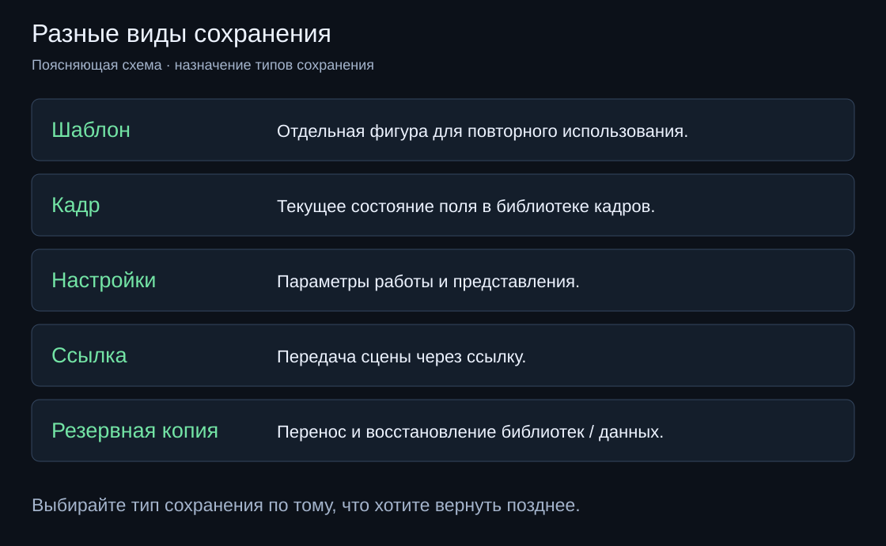
«Сохранить всё» создаёт полную работу .mayatnik с текущим кадром, краской, шаблонами, библиотекой, зеркалами и подсветкой. «Открыть работу» принимает этот файл и старую раскраску JSON. Ссылка переносит построение и настройки текущего кадра; слишком большой результат удобнее передавать полной работой. Для всех библиотек сразу используйте резервную копию.
GIF и видео
Для GIF нажмите запись, запустите анимацию либо меняйте кадры и масштаб; повторное нажатие завершает запись и скачивает файл. Записывается видимое окно поля с текущими слоями, сдвигом и масштабом. Размер окна фиксируется при старте: до 1024 пикселей по длинной стороне, до 10 кадров в секунду, 256 цветов.
Видео запускается и завершается повторным нажатием «Запись». Во время записи можно запускать маятник, менять масштаб и красить. Браузер скачивает MP4 при поддержке этого формата, иначе WebM.
Гиф-Масштаб
Этот инструмент берёт один полный кадр, уменьшает его до 8, 16 и следующих строк, затем увеличивает каждый вариант обратно. Выберите шаг 8 или степени 2, метод «Ближайший», «Большинство» либо «Средний цвет», паузу 20–5000 мс. Повтор «Создать GIF» отменяет генерацию; «Просмотр» открывает последний результат.
Экспортная копия дополняется пустыми строками снизу до кратного восьми; поле сохраняется. Гиф-Масштаб требует режима процессора, допускает до 16 777 216 пикселей и сторону до 65535. Для слишком большого числа вариантов выберите степени 2 или уменьшите поле.
Отмена, очистка и восстановление
«Отмена» возвращает предыдущее действие с краской, битами или шаблонами; «Повтор» восстанавливает отменённое. Горячие клавиши работают, когда фокус не находится в текстовом поле. Перед большой серией изменений удобно сохранить полную работу или кадр в библиотеке.
На широком экране единый контрол Отмена / ромб / Повтор закреплён четвёртым слева и не перетаскивается; его больше нет в нижней полосе. Центральный ромб сохраняет своё действие: включить или снять вместе удержание верхнего и нижнего краёв масштаба.
Очистка формируется по текущей сцене: в списке появляются только присутствующие эффекты и материалы — краска, автоматическая окраска, оси, зеркала, шаблоны, выделения, скрытые ячейки, заморозки, наложения и другие включённые слои. Команда убирает именно указанный элемент; после удаления ненужный пункт исчезает. «Всё сразу» остаётся общей командой сброса, сохранённые библиотеки сохраняются.
Выбирайте очистку по задаче. Команды похожи по названию, но затрагивают разные части работы.
| Команда | Что убирает |
|---|---|
| Сброс цветов | Настройки цветов и их автосмену в соответствующей группе. Нанесённая краска остаётся. |
| Окраска, в Очистке | Цвета и включённые способы автоматической окраски. Изменения самих битов остаются. |
| Стереть, в Раскраске | Краску и изменения самих битов. Это шире простой очистки цвета. |
| С нуля | Заливки, следы и полевые шаблоны. Действие можно отменить. |
| Сброс шабл. | Возвращает исходные полевые фигуры. Библиотека и обычная краска сохраняются. |
«Из памяти» возвращает сохранённую раскраску либо работу.
Сбросы вида, масштаба, измерений, точки, ячеек и слоёв относятся к соответствующим группам. «Зеркала» выключает отражения. «Все оси» удаляет созданные линии, N-наборы и линейку, скрывает найденные оси, точку встречи, центр и размеры; одно действие «Отмена» возвращает оси. «Выделение» снимает выбор шаблона. «Остановить всё» останавливает движения.
Страница запоминает работу, настройки и раскладку в хранилище браузера. Очистка данных браузера или переход в другой профиль может лишить этой памяти. Для переноса и долговременного хранения скачивайте файл. Зафиксированный экранный снимок наложения после обновления страницы заново не появляется.
Клавиши и жесты
ЛКМ — левая, ПКМ — правая, СКМ — средняя кнопка мыши. Команды зависят от места нажатия и активного инструмента. Поля ввода, редактируемый текст, кнопки в фокусе и диалоги имеют собственные обработчики: завершите ввод и верните фокус полю. Во время ввода текста и композиции символов команды поля не следует считать глобальными. На macOS вместо Ctrl в отмене, выборе осей и выносе кнопок поддерживается Cmd.
Клавиатура
| Клавиши | Контекст и действие |
|---|---|
| Пробел | На поле — пуск / пауза. На кнопке в фокусе — её нажатие. |
| ← / → | Предыдущий / следующий ход; при «Трети» — часть кадра. Если выбран инструмент последнего ручного действия, сначала перемещается он. |
| Все четыре стрелки | После ручного перемещения управляют выбранным действием: прокруткой, своей осью, точкой встречи, ручкой линейки и другими поддерживаемыми инструментами. Esc освобождает этот режим, когда не осталось более приоритетного выбора. |
| + / =; − / _; 0 | Приблизить; отдалить; вписать поле. Ограничение «Блок» и выбранная кратность сохраняют действие. |
| Ctrl+Z; Ctrl+Y / Ctrl+Shift+Z | Отмена; повтор отменённого действия. |
| Esc | По контексту: снять выбор шаблонов и слежение, выйти из заливки / ручной змейки, убрать выбранный маршрут или совпадение, незавершённую линию / мерку, выделение клеток, закрыть список или вернуться из Дзена. В процессе перетаскивания поддерживаемой ручки — отменить жест. |
| Delete; Backspace | Для выбранного шаблона: временно скрыть в текущем кадре / виде; убрать с поля. Для выбранных собственных осей — удалить их. Для выбранного N-набора осей — Delete; Esc выключает режим N-осей и снимает выбор. |
| Enter / Пробел; Tab / Shift+Tab | Нажать элемент в фокусе; перейти между доступными элементами. В числовом вводе с отдельной командой Enter применяет введённое значение. |
| Shift+F10 / клавиша меню | На заголовке группы — клавиатурный эквивалент ПКМ: сменить полный и компактный заголовок. |
| Стрелки на осевой ручке | Своя горизонтальная / вертикальная / диагональная ось: шаг ½ клетки, с Shift — клетка. На ручке оси поворота шаблона — также ½ клетки или клетка с Shift; на ручке переноса шаблона — целая клетка по разрешённому направлению. |
| При включённых «Гранях» | L — линия; Num5 — верх; Num0 — низ; 1 / Num1 и 2 / Num2 — две диагонали. Esc отменяет начатую линию, сам режим не выключает. |
| Окна «Сгиб» / «Столб» | Их плеер: Пробел — пуск / пауза, ← / → — шаг с паузой, Esc — закрыть. Для «Сгиба» курсор или фокус должен находиться в его окне. |
| Поиск кнопок; подразделы ХОРР | В строке поиска: ↑ / ↓ — результат, Enter — показать, Esc — закрыть. На названиях подразделов ХОРР: ↑ / ↓, Home / End — фокус; ← / → — открыть подраздел. В его списке стрелки вверх / вниз обходят элементы, стрелка к заголовку возвращает фокус. |
| Библиотека; палитра заливки | На вкладках библиотеки: ← / →, Home / End. В квадрате цвета палитры: стрелки меняют насыщенность / яркость на 1, с Shift — на 10; Home / End — насыщенность 0 / 100. |
| Граница столбца редактора последовательностей | ← / → меняют ширину на 8 px, с Shift — на 24; Home / End задают минимальную / максимальную ширину; Esc отменяет перенос. |
| Автоцвет у поддерживаемого цветового контрола | → или Alt+A открывают его панель автоцвета; Esc закрывает её. |
| Бегунок своего числа строк ХОРР | Стрелки меняют число на 1, с Shift — на 10; Home / End — 8 / 4096; Enter применяет значение. |
Поле: мышь и колесо
| Жест | Действие |
|---|---|
| Колесо / прокрутка тачпада над полем | Масштаб к указателю; вверх — приблизить, вниз — отдалить. Над меню, числовым контролом и списком колесо относится к этому элементу. |
| ЛКМ или СКМ + тянуть свободное место | Прокрутить поле. Инструмент под указателем может перехватить жест. |
| СКМ без сдвига | Включить / выключить Дзен. |
| Двойной ЛКМ на свободном поле | Пуск / пауза. Рабочие ручки, оси, шаблоны, выделение и активные инструменты имеют собственные действия и исключены из этого жеста. |
| ПКМ по области при обычном выборе | Взять область по текущему правилу связности и экранным цветам. По уже выбранному шаблону — выбрать его либо снять выбор текущего; по своей оси — изменить её выделение. |
| ЛКМ в режиме заливки / столбов | Применить текущую окраску. Shift добавляет зеркальную парную область, кроме «Одного бита». |
| ПКМ при активной заливке | Перейти к следующему цвету радуги и сразу окрасить указанную область; Shift сохраняет парное применение. |
| Shift + ЛКМ; режим выбора вершины | Указать вершину конуса. При включённой симметрии обычный щелчок по полю также используется для выбора вершины. |
Меню, плеер и библиотека
| Элемент и жест | Действие |
|---|---|
| Навести мышь на заголовок / кнопку со списком | Открыть группу / варианты. Незакреплённая группа закрывается после ухода мыши; щелчок мимо и Esc закрывают соответствующий список. |
| ЛКМ по заголовку; по боковому значку закрепления | Раскрыть / свернуть; закрепить / открепить. Двойной щелчок по полному заголовку группы также переключает закрепление. |
| ПКМ по заголовку / обычной кнопке | Заголовок: полный / компактный вид. Обычная команда: полная кнопка / ромб; это изменение оформления, а не универсальная команда выключения. |
| Тянуть заголовок | Переставить группу между доступными местами меню. Esc отменяет незавершённый перенос. |
| Колесо над колонкой / полосой меню | Прокрутить эту колонку / полосу. Внутренний список и числовой контрол сохраняют собственную прокрутку, поле под ними не масштабируется. |
| Кнопка с циклом вариантов | ЛКМ — следующий доступный вариант; колесо или ПКМ могут выбирать направление цикла, если это предусмотрено именно этим контролом. Выбор строки открытого списка задаёт конкретный вариант. |
| ПКМ по варианту открытого списка | Исключить вариант из циклического перебора / вернуть его. Исключённый пункт не выбирается обычным щелчком; это отличается от сворачивания самой кнопки в ромб. |
| Колесо над числовой парой / «Размером» цифр | В поддерживаемых числовых парах меняет значение той половины, над которой указатель; над «Размером» цифр — размер шрифта. Над миниатюрой концов поля при включённых Перескоке и Краях — масштаб этой миниатюры. |
| Стрелка числового контрола: нажать / удерживать | Один шаг / повторять шаги. Тянуть бегунок — менять значение. Двойной щелчок по поддерживаемому бегунку / значению — 0 в пределах допустимого диапазона, у скорости минимум 1. |
| Пульт кадра: ◀ / ▶ | При паузе — шаг по текущей скорости; при работающем плеере левая стрелка останавливает и возвращает к кадру 0, правая — останавливает на текущем кадре. |
| Ромбы скорости ×N и длительности t | Первый щелчок открывает значения, повторный — следующий вариант. На ромбе ↓ открывает список с фокусом на текущем значении; внутри стрелки перемещают фокус, Enter / Пробел выбирают, Esc закрывает. |
| Ромб / число кадра: тянуть; двойной щелчок | Выбрать кадр; вернуть кадр 0. На числе в фокусе ← / → меняют кадр на 1, Home / End ведут к границам диапазона. Enter / Пробел на центральной части пульта — пуск / пауза. |
| Цветной кружок; образец RGB | Открыть выбор цвета; выбрать / снять соответствующий RGB-фильтр. Пустой набор фильтров показывает все классы. |
| Ctrl / Cmd + тянуть поддерживаемую кнопку из рейки | Вынести её копию на поле. Копия перетаскивается; ПКМ по вынесенной копии удаляет её. |
| Левая граница библиотеки: тянуть | Изменить ширину, повторно скрыть перекрытые группы. Двойной щелчок закрывает библиотеку. На границе в фокусе ← / → меняют ширину на 10 px, с Shift — 40; Home / End — минимум / максимум; Esc отменяет текущий перенос. |
| Название карточки библиотеки | Один щелчок — выбрать; двойной — открыть переименование. ПКМ по превью шаблона также открывает переименование. Подтверждение и отмена — в диалоге имени. |
| Отдельное окно кадра | Колесо — масштаб к указателю; ЛКМ + протяжка — прокрутка снимка. Положение и масштаб этого окна относятся к его снимку. |
| × у таблицы на поле | Выключить таблицу и вернуть видимость поля. На Заморозке правая треть «Сбр» удаляет только накопленные границы. |
Шаблоны и инструменты
| Контекст и жест | Действие |
|---|---|
| Шаблон: щелчок по телу | Выбор зависит от режима выделения; обычный ЛКМ по уже выбранному шаблону запускает поиск его вхождений. Само тело не служит свободной ручкой переноса. |
| Осевой захват переноса шаблона: тянуть | Переместить по разрешённому направлению при включённом переносе; стрелки на захвате дают шаг клетки. Esc отменяет жест. |
| Ось поворота шаблона | Ромб на оси — выполнить поворот; тянуть саму ось — изменить её положение. Соответствующие стрелки двигают её на ½ клетки, с Shift — на клетку. |
| Своя ось: ЛКМ / тянуть | Выбрать; переместить линию или её доступный конец. Shift / Ctrl / Cmd + щелчок меняют набор выделенных осей; Shift + рамка в свободном месте добавляет оси. |
| Ручная ось / её подпись: двойной щелчок | Вернуть исходное положение, если эта ось поддерживает сброс. |
| Режим своей оси; линейка | ЛКМ задаёт горизонтальную ось по выбранной строке. У линейки два щелчка задают концы; углы готовой мерки можно тянуть. |
| Центр точки встречи: тянуть вверх / вниз | Листать кадры; на большом поле кадр применяется при отпускании. Свободную ось вдали от центра можно перемещать отдельно. Двойной щелчок по ручке центра снимает ручной сдвиг. |
| Разделитель полей «Обе рядом» | Тянуть — изменить взаимный сдвиг; двойной щелчок — обнулить его. |
| Наложение при видимости 100% | Незафиксированную копию можно тянуть мышью / пальцем; двойной щелчок снимает её ручной сдвиг. При 50% поле остаётся доступным под копией. |
| Выделение клеток / строк / столбцов | ЛКМ + протяжка задаёт диапазон в выбранном режиме. Esc отменяет текущую протяжку и снимает выделение. |
| Окрашенная область при остановке и активном инструменте | Если двойной щелчок не занят пуском или ручкой инструмента, он снимает краску связной области того же цвета, сохраняя биты. |
| Подпись области при включённых «Площадях» | ЛКМ выделяет соответствующую область в разметке; повторное нажатие снимает её акцент. |
Касания и тачпад
| Жест | Действие |
|---|---|
| Один палец по свободному полю | Тянуть — прокрутить; касание при включённой заливке / выделении применяет активный инструмент. На осевом захвате шаблона — перенос по оси. |
| Два пальца на поле | Разведение / сведение — масштаб, движение пары — сдвиг. Второй палец отменяет незавершённый одиночный захват, чтобы начать общий жест; при отпускании не создаётся лишнее выделение. |
| Касание заголовка меню | Открыть группу без наведения мыши. Полоса меню прокручивается пальцем; поле под ней сохраняет свой масштаб. |
| Касание при ручной змейке | Короткое касание добавляет клетку / выбирает маршрут. Протяжка вместо касания прокручивает поле, второй палец переключает на общий масштаб / сдвиг. |
| Прокрутка тачпада | Над полем — масштаб к указателю; над меню / списком — его прокрутка. Жест браузера над страницей инструкции относится к самой инструкции. |
Небольшие опыты для закрепления
RGB → маска → шаблон
- N=128, обычный Маятник, остановленный кадр.
- RGB: один голубой класс, режим ЧБ.
- Правым щелчком возьмите интересную видимую белую область по выбранному правилу связности.
- Сохраните её в Шаблоны. Esc снимет выделение, сама фигура сохранится.
- Вернитесь в «Биты» и сравните видимую маску с исходными значениями.
Один кадр — разные способы сохранения
- Сделайте небольшую раскраску и создайте шаблон.
- Сохраните шаблон в его разделе, кадр — в «Кадрах», настройки цвета — в «Настройках».
- Создайте ссылку и сравните её превью.
- Скачайте полную работу .mayatnik либо резервную копию всех материалов.
Край 2N−1 против 8N−1
- Используйте N=128 и обычный Маятник.
- Сохраните кадр при ширине 2N−1=255.
- Включите 8N: ширина станет 1023 при прежней высоте.
- Установите одинаковое положение по смыслу опыта: один номер хода либо один завершённый цикл. Это разные сравнения.
- Сохраните второй кадр с названием, в котором указаны N, ширина и режим края.
Проверки экспорта и ссылки
Новые MP4 сохраняют исходные адреса фрагментов при записи длительности и индекса: это необходимо для перемотки. GIF всегда содержит первый кадр, даже если остановить запись сразу; длительность относится к действительно показанному кадру. Исправления применяются к новым записям.
Ссылка передаёт настройки поля, RGB и выбранные цвета, масштаб, прокрутку, краску, инструменты и источник Аниматрицы. Для обычного края после нескольких кругов она также хранит опорное накопленное поле текущего круга и розовые отметки. Незавершённый построчный шаг и тестовый рисунок нужно завершить либо сохранить полной работой. История редактирования, библиотека, полные шаблоны и состав слоёв сохраняются через «Сохранить всё». Слишком большая ссылка отклоняется с предложением сохранить файл.
«Блок» удерживает масштаб при нажатии «Вниз» и изменении размеров окна. После F5 масштаб остаётся в пределах ×512 независимо от основания кратности. Край рассчитывается на CPU: это сохраняет точные розовые отметки и опоры для возврата внутри накопленного круга.